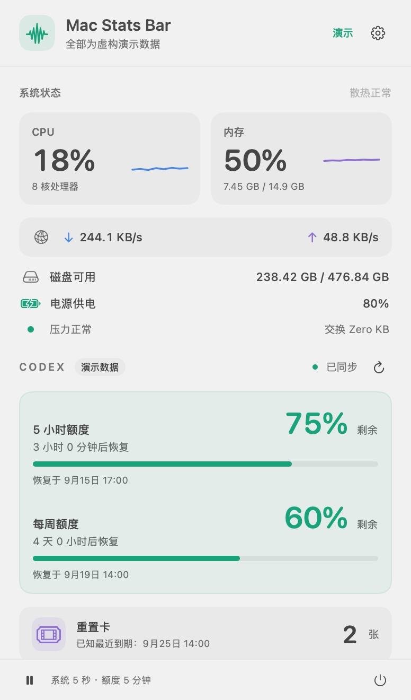

MACOS 13+ · NATIVE APP
菜单栏有点挤？
给它装个小抽屉。
CPU 忙不忙、内存用了多少、Codex 还能工作多久，一眼掌握。点开小箭头，把常用状态和收纳的应用放到刘海下方。
- 系统状态CPU、内存、网络、磁盘、电池与散热状态。
- Codex 额度余量、恢复时间、倒计时和重置卡数量。
- 展开托盘 · 预览授权辅助功能后，收纳并打开其他应用的菜单栏图标。
GET STARTED
构建一次，放进菜单栏
需要 macOS 13 或更新版本，以及 Apple Command Line Tools。在螺丝刀仓库根目录运行：
./mac-stats-bar/scripts/build.sh
open "mac-stats-bar/dist/Mac Stats Bar Preview.app"点击菜单栏小箭头打开托盘，右键进入系统与额度详情。Codex 额度需要本机安装 Codex 并登录 ChatGPT 账户；重置卡当前仅展示。
怎样收纳被刘海挡住的图标？
- 在托盘中点击「连接菜单栏应用」，按提示授权辅助功能。
- 点击「整理菜单栏」，按住 ⌘ 把想隐藏的图标拖到分隔线左侧，保持小箭头在线右侧。
- 点击「完成并收起」。之后点小箭头，即可打开收纳项。
退出应用、休眠或屏幕布局变化会恢复原图标。托盘使用应用图标，菜单由原应用打开；不同应用的支持情况会有差异。
辅助功能已开启，为什么仍提示未授权？
默认本机构建使用临时签名，更新或更换应用位置后可能需要重新授权。退出应用，在系统设置的「隐私与安全性 → 辅助功能」中移除旧条目，再添加当前构建并开启权限。

用于展示功能，不代表个人账户状态。